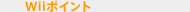
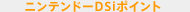
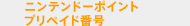

2008年秋から、店頭でこんなカードを販売しているのを目にされている方もいるのではないでしょうか。
じつは、これ、ゲームを扱っているお店で購入できる「ニンテンドーポイントプリペイドカード」です。
2008年12月24日より、Ｗｉｉの「Ｗｉｉウェア」と同じように、ニンテンドーDSiでも専用の「ニンテンドーDSiウェア」をインターネットを通じで購入できるようになりました。これに関連して、この秋からこれまで「Ｗｉｉポイント」だけだった、決済のためのシステムがリニューアルしています。期間限定のお得なサービスのご紹介と一緒に、ニンテンドーポイントにまつわるアレコレをまとめてみました。
そもそも、ニンテンドーポイントって何なのでしょうか？今までバーチャルコンソールやＷｉｉウェアを購入するときに使っていた、Ｗｉｉポイントとは何が異なるのでしょうか？
Ｗｉｉポイントと新たに生まれたニンテンドーDSiポイント、ニンテンドーポイント。
これらは、従来のパッケージソフトとは違う新しいソフトの買い方と一緒に誕生しました。
最初にこの３つを簡単に整理してみると下記のようになります。
|  | ＷｉｉでＷｉｉウェアやバーチャルコンソールのソフトを購入する際などに使用するポイント。 |
|  | ニンテンドーDSiでニンテンドーDSiウェアを購入する際に使用するポイント。 |
|  | ＷｉｉポイントやニンテンドーDSiポイントを登録する前の状態のポイント。お店や携帯電話でプリペイド番号を購入できます。 |
※チャージ・・・使用可能な状態で登録すること |
簡単にいってしまうと、ＷｉｉポイントとニンテンドーDSiポイントは、ＷｉｉやニンテンドーDSiなどインターネットに接続してソフトを購入したり、サービスを受けたりするときに必要なポイントのこと。
ニンテンドーポイント（プリペイド番号）は、クレジットカードをお持ちでない方や使いたくない方が、ＷｉｉポイントやニンテンドーDSiポイントを購入するときに必要になります。ニンテンドーポイントを誰かにプレゼントしたい、といった場合にも安心して使用していただけます。

「ニンテンドーポイントプリペイド番号」を購入するには、いくつかの方法をご用意しています。
一番身近な例でいくと、携帯電話を使った購入方法があります。docomoかauの携帯電話なら、「http://nintendo.jp/np/」にアクセスしてすぐに買うことができます。サイトを開いたら、「ニンテンドーポイント番号を購入する」⇒購入ポイントを1000、2000、3000から選択⇒利用規約に同意⇒各携帯電話の暗証番号を入力と、サクサク進むことができます。このときの代金は、携帯電話の料金と一緒に請求されます。
携帯電話が他社のものを使っている、あるいは携帯電話を持っていないという人もご安心を。
お近くのコンビニエンスストア（※）まで少し足を伸ばしてもらえば、設置されている端末から、「ニンテンドーポイントプリペイド番号」を購入することができます。クレジットカードや携帯電話のように電子決済を介さないので、お子様にも安心してご利用いただけるのではないでしょうか。
※2009年1月現在、セブン-イレブン、ローソン、ファミリーマート、サークルＫ、サンクス、ミニストップ、デイリーヤマザキ、セイコーマートの各店舗でご購入いただけます。
あるいは、ゲームやゲーム機本体を買ったタイミングでポイントも一緒に買いたいという方には、ゲーム取扱店で販売している「ニンテンドーポイントプリペイドカード」がおすすめです。「ニンテンドーポイントプリペイドカード」裏面のスクラッチを削ると出てくるシリアル番号がニンテンドーポイントプリペイド番号です。この方法ならちゃんとしたカードの状態で購入できるので、プレゼント用にもお使いいただけます。
さて、ニンテンドーポイントプリペイドカードやニンテンドーポイントプリペイド番号の用意ができたら、ＷｉｉやDSiでポイント管理画面を開きます。購入したポイントは、そこから「Ｗｉｉポイント」と「DSiポイント」に登録することができます。
ここでいくつか知っておくとためになるご注意を。
ご家庭によっては、以前に購入してまだ登録していない「Ｗｉｉポイントカード」が残っているというご家庭もあるかもしれません。名前は違いますが、Ｗｉｉポイントプリペイドカードも、現在販売しているニンテンドーポイントプリペイドカードと同様にご使用いただけます。もちろん、ニンテンドーDSiにもご使用いただくことができます。
また、一度、Ｗｉｉ本体に登録したＷｉｉポイントはニンテンドーポイントに戻したり、ニンテンドーDSiポイントに変更したりすることはできません。これはニンテンドーDSiポイントでも同様です。購入した金額は一度にチャージされますので、特定のソフトだけを購入したい場合には、購入する金額を決めるときにご注意ください。
ニンテンドーDSi本体をお持ちの方は、ぜひ、ニンテンドーDSiウェアをお試しください。ニンテンドーDSiウェアとは、インターネットを通じてのみ購入することができるソフトウェアのこと。自宅に無線LAN環境があればご自宅にいながら、専用の最新ソフトウェアをダウンロード購入できます。Wi-Fi環境がない方も、全国の店頭にあるDSステーションならば、難しい設定をしなくても、DSi本体をもってDSステーションのそばまで行くだけでインターネットに接続できるので、DSステーションのそばで「DSiメニュー」から「ニンテンドーDSiショップ」を選ぶだけ（※）でおためしいただくことができます。
※ニンテンドーDSiショップを起動する際に本体の更新を求められる場合があります。本体の更新を求められた場合には、表示された案内にしたがって本体を更新してください。
2008年12月24日から「ニンテンドーDSiウェアおためしキャンペーン」を始めています。これは、2010年3月末まで、１台のDSiにつき１度だけ、DSiショップにアクセスすると1000DSiポイントがプレゼントされるというもの。
まずはこのプレゼントされるポイントを使って、ニンテンドーDSiポイントをどんな感じで使用するのか、そして自分のニンテンドーDSiにお気に入りのソフトが内蔵されていって、どんどん自分だけのDSiになっていく楽しさがどんなものかを体験していただくことができます。
ニンテンドーDSiウェアには、『うごくメモ帳』といった遊び心を盛り込んだ無料のツールのほか、200ポイント、500ポイント、800ポイント以上という３つの価格帯に分けられたソフトをご用意しています。
DSiのカメラを使った新しい感覚のゲーム『うつすメイドインワリオ』（500ポイント）や『Dr.MARIO』がどこでも楽しめる『ちょっとDr.MARIO』（500ポイント）といったゲームから、どこでも脳トレに挑戦できる『ちょっと脳を鍛える大人のDSiトレーニング 文系編・理系編』（各800ポイント）やマジック実演ソフト『ちょっとマジック大全』（200ポイント）というユニークなものまで、豊富なラインナップが揃っています。
Ｗｉｉでは、ポイントがあれば、Ｗｉｉウェアやバーチャルコンソールのソフトのダウンロード購入はもちろん、さらに、ニンテンドーWi-Fiコネクション有料サービスをお楽しみいただけます。『カラオケJOYSOUND Wii』や『サンバDEアミーゴ』などニンテンドーWi-Fiコネクション有料サービスが楽しめるパッケージソフトが発売されるなど、新しい流れも出てきました。
ソフトの購入はまだちょっと、という方は今回のN.O.Mで特集した『きょうとあしたの占いラッキーチャンネル』や、以前紹介した『デジカメプリントチャンネル』など無料でダウンロードできるＷｉｉチャンネルもご用意していますので、まずは一度、Ｗｉｉショッピングチャンネルを覗いてみてはいかがでしょうか。
このように、「ニンテンドーポイント」を上手く使えば、ＷｉｉやDSiの楽しみ方をもっと広げることができます。「ゲーム機にインターネット接続機能が付くとこんなことができるんだ」という発見が、きっとできることでしょう。